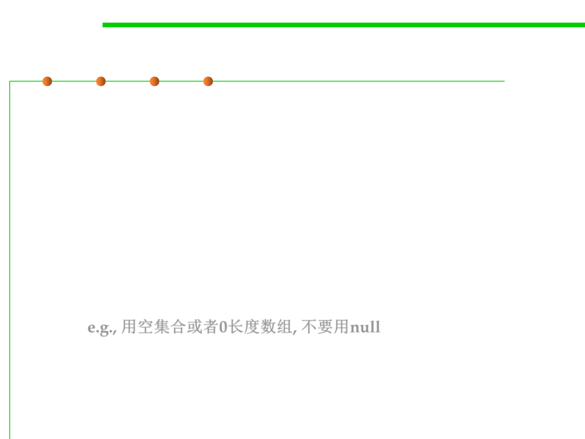

(8) Method design
5.2 Construction for Reuse
▪ Overload with care. Often better to use a different name.
▪ Use appropriate parameter & return types.
– Favor interface types over classes for input for flexibility, performance
– Use most specific possible input parameter type, thus moves error from
runtime to compile time.
▪ Avoid long parameter lists. Three or fewer parameters is ideal.
– What if you have to use many parameters?
▪ Avoid return values that demand exceptional processing. Return
zero-length array or empty collection, not null.返回值勿需进行异常
处理, e.g., 用空集合或者0长度数组, 不要用null